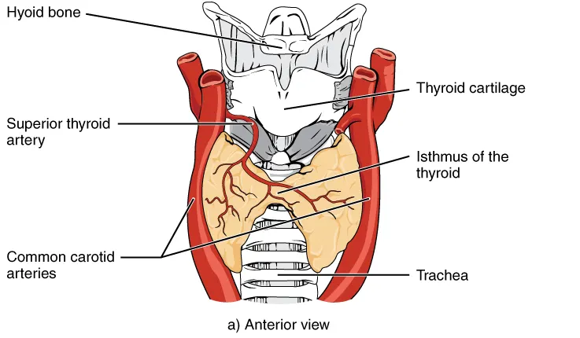

DX.10 — Syndrome des hamartomes tumoraux lié à PTEN
Une macrocéphalie marquée et précoce, associée à un autisme, à des lipomes ou à des lentigines du pénis, fait rechercher un variant de PTEN (phosphatase and tensin homolog)S2S4. Le diagnostic confirmé conduit à un conseil génétique familial et à une surveillance tumorale à vie, d’abord thyroïdienne chez l’enfantS2S3. Aucun médicament ne traite le syndrome lui-même, et les inhibiteurs de mTOR restent réservés aux études cliniquesS2.
Ce cours sur le syndrome des hamartomes tumoraux lié à PTEN reprend les sources citées ; il n’a pas été validé cliniquement par un médecin.
1. Définition
Le syndrome des hamartomes tumoraux lié à PTEN (PHTS) comprend les affections causées par un variant constitutionnel pathogène de PTEN, gène suppresseur de tumeur du chromosome 10S2S3. Il réunit notamment le syndrome de Cowden, le syndrome de Bannayan-Riley-Ruvalcaba, certains autismes avec macrocéphalie et la maladie de Lhermitte-DuclosS2S4. Sa transmission est autosomique dominante, et il associe une croissance excessive, des hamartomes multiples et un risque accru de cancersS2.
2. Épidémiologie (Suisse, puis Europe)
Les sources suisses lues ne chiffrent pas ce syndrome ; elles fournissent l’outil de dépistage, avec des courbes nationales de croissance recommandées depuis le 15 juin 2026S1. En Europe, la recommandation pédiatrique allemande indique une prévalence comprise entre 1 sur 200 000 et 1 sur 250 000S2. Un variant de PTEN se retrouve chez 10 à 27 % des personnes autistes porteuses d’une macrocéphalie, surtout lorsque la macrocéphalie est très marquéeS2. Les chiffres utiles rassemblent ces données, et les risques de cancer au cours de la vie montrent pourquoi la surveillance dure toute la vie.
Chiffres utiles : Suisse, puis Europe
| Donnée | Valeur | Population et date | Source |
|---|---|---|---|
| Courbes nationales de croissance | Recommandées depuis le 15 juin 2026 | Suisse | S1 |
| Prévalence du syndrome | 1 sur 200 000 à 1 sur 250 000 | Recommandation allemande, 2022 | S2 |
| Variant PTEN dans l’autisme avec macrocéphalie | 10 à 27 % | Revue allemande, 2022 | S2 |
| Autisme chez les porteurs | Environ 22 %, contre environ 1 % dans la population | Revue allemande, 2022 | S2 |
| Périmètre crânien (PC) au-delà du 97e centile | Chez tous les patients à 2 ans | Cohorte allemande | S2 |
| PC entre +4 et +6 déviations standard (DS) | Environ deux tiers des enfants | Revue européenne, 2022 | S4 |
| PC moyen à l’âge adulte | 60,0 cm chez la femme, 62,8 cm chez l’homme | Revue européenne, 2022 | S4 |
| Signes cutanés | 66 % des patients | Étude rétrospective citée par la revue européenne | S4 |
| Symptômes digestifs | 34 % | Même étude | S4 |
| Imagerie thyroïdienne anormale | 26 % | Même étude | S4 |
| Lentigines du pénis | Environ la moitié des garçons porteurs | Revue allemande, 2022 | S2 |
| Anomalies vasculaires | Au moins un tiers des porteurs | Revue allemande, 2022 | S2 |
La taille et le poids restent normaux, ce qui distingue cette grande tête isolée des syndromes de croissance excessive généraliséeS4. Le diagnostic reste souvent tardif, car les familles parcourent un long chemin avant de rencontrer un médecin familier de cette maladie rareS2.
Risques de cancer au cours de la vie
| Organe | Risque selon la recommandation allemande | Risque selon le réseau européen | Âge habituel | Source |
|---|---|---|---|---|
| Tout cancer | 89 % à 70 ans | 85 à 89 % | Adulte | S2S3 |
| Sein chez la femme | 81 % | 67 à 85 % | Médiane de 38 à 46 ans | S2S3 |
| Thyroïde | 21 à 38 % | 6 à 38 %, médiane à 37 ans | Dès l’enfance ; plus jeune cas à 6 ans | S2S3 |
| Endomètre | 19 à 28 % | 2 à 28 % | Fin de la trentaine | S2S3 |
| Rein | Environ 15 % | 2 à 34 % | Plus jeune cas à 11 ans | S2S3 |
| Côlon et rectum | 9 à 16 % | 9 à 20 % | Vers 50 ans | S2S3 |
| Mélanome | Environ 6 % | 0 à 6 % | Cas rapportés dès 3 et 6 ans | S2S3 |
Le réseau européen juge ces estimations probablement trop hautes, car les études publiées recrutent surtout des patients déjà maladesS3. Chez l’enfant, seule la thyroïde porte un risque de cancer régulièrement décrit, alors que les autres cancers restent des cas isolésS2.
3. Physiopathologie
Le gène PTEN code une phosphatase qui freine la voie PI3K-AKT-mTOR (phosphoinositide 3-kinase, protéine kinase B, cible mécanistique de la rapamycine)S2. Lorsque PTEN perd sa fonction, cette voie s’emballe et provoque une croissance excessive, des tumeurs bénignes et malignes, et une grande têteS2S4. Les conséquences par organe et les syndromes du spectre se lisent dans deux tableaux.
De la perte de PTEN aux signes cliniques
| Étape | Ce qui se passe | Traduction clinique | Source |
|---|---|---|---|
| Variant constitutionnel | Perte d’un suppresseur de tumeur, transmission autosomique dominante | Atteinte possible d’un parent et de la fratrie | S2 |
| Voie PI3K-AKT-mTOR suractivée | Phosphorylation accrue de nombreuses protéines | Croissance, migration et survie cellulaires accrues | S2 |
| Cerveau | Mégalencéphalie bilatérale et symétrique | Macrocéphalie souvent présente dès la naissance | S4 |
| Tissus | Hamartomes multiples | Lipomes, hémangiomes, polypes digestifs | S2 |
| Angiogenèse | Régulation vasculaire perturbée | Anomalies vasculaires en tout point du corps | S2 |
| Métabolisme | Sensibilité accrue à l’insuline | Tendance au surpoids, hypoglycémies rapportées | S2 |
| Immunité | Signalisation PI3K-AKT accrue dans les lymphocytes | Auto-immunité ou hyperplasie lymphoïde chez 43 % de 79 patients | S2 |
La même anomalie moléculaire explique donc la grande tête du nourrisson et les cancers de l’adulte, ce qui justifie une surveillance commencée dès l’enfanceS2. Aucune corrélation claire entre génotype et phénotype ne permet aujourd’hui d’adapter la surveillance au variant précisS2S3.
Syndromes du spectre PTEN
| Syndrome | Âge typique | Traits principaux | Source |
|---|---|---|---|
| Bannayan-Riley-Ruvalcaba | Enfance | Macrocéphalie, hamartomes, lentigines du pénis, retard ou autisme | S2S4 |
| Cowden | Adulte jeune | Macrocéphalie, lésions cutanées, cancers du sein, de l’utérus et de la thyroïde | S2S4 |
| Autisme avec macrocéphalie | Enfance | Variant de PTEN plus fréquent quand la tête est très grande | S2 |
| Lhermitte-Duclos | Troisième ou quatrième décennie | Gangliocytome dysplasique du cervelet, ataxie, hypertension intracrânienne (HTIC), convulsions | S2S4 |
| Proteus-like | Variable | Croissance excessive segmentaire, rarement liée à PTEN | S2S3 |
| Polypose juvénile du nourrisson | Nourrisson | Délétion de BMPR1A (bone morphogenetic protein receptor type 1A) et de PTEN, saignements digestifs, entéropathie exsudative | S2 |
Les syndromes de Bannayan-Riley-Ruvalcaba et de Cowden représentent une seule maladie à expression variable, la première forme décrivant l’enfant et la seconde l’adulteS2. L’HTIC concerne ici surtout le gangliocytome cérébelleux de l’adulte, qui comprime le quatrième ventriculeS4.
4. Démarche diagnostique
La démarche part d’un PC très élevé, puis elle cherche les signes associés qui justifient l’analyse du gène PTENS2S4. Le médecin mesure d’abord les parents, car une grande tête stable et familiale chez un enfant sain évoque plutôt une macrocéphalie constitutionnelleS5. Il pense au syndrome lié à PTEN lorsque la macrocéphalie atteint +3 DS ou plus avant 2 ans, ou lorsqu’un signe associé apparaîtS2. Les étapes de la démarche et la suite après un résultat positif sont détaillées dans deux tableaux.
Démarche diagnostique : de la grande tête au test génétique
| Étape | Geste précis | Seuil ou constat | Conduite | Source |
|---|---|---|---|---|
| 1. Mesurer | Trois mesures du PC, la plus longue reportée sur la courbe nationale | PC au-delà du 97e centile, souvent +3 DS ou plus | Suivre la courbe et mesurer les parents | S5S1S2 |
| 2. Écarter l’urgence | Rechercher les signes d’HTIC et un croisement de deux lignes | Signe présent | Orientation et imagerie selon l’urgence | S5 |
| 3. Chercher les signes associés | Développement, comportement, peau, organes génitaux, thyroïde, vaisseaux | Autisme, retard, lipome, lentigines, anomalie vasculaire | Appliquer les critères pédiatriques | S2 |
| 4. Imager si indiqué | Imagerie par résonance magnétique (IRM) cérébrale lors du bilan de la macrocéphalie | Espaces périvasculaires élargis, anomalies de la substance blanche | Argument mineur supplémentaire | S2S4 |
| 5. Tester | Analyse moléculaire du gène PTEN après conseil | Variant pathogène | Confirmer le diagnostic | S2 |
| 6. Étendre à la famille | Conseil génétique et test des parents et de la fratrie | Parent porteur | Surveillance des apparentés | S2 |
La recommandation allemande concerne tous les spécialistes de l’enfant, avec une attention particulière pour les pédiatres généralistes et les neuropédiatresS2. En cas de doute, elle conseille de présenter l’enfant à un généticien clinicien plutôt que de multiplier les examensS2.
Après un variant pathogène confirmé
| Moment | Action | Intervenant | Source |
|---|---|---|---|
| Annonce | Information sur la variabilité clinique et les complications possibles | Médecin expérimenté dans ce domaine | S2 |
| Rapidement | Conseil génétique et analyse des parents et de la fratrie | Généticien | S2 |
| Au diagnostic | Première échographie thyroïdienne et échographie abdominale | Pédiatre, radiologue | S2 |
| Chaque année | Examen physique complet, évaluation psychomotrice | Pédiatre | S2 |
| Dès 18 ans et à l’âge adulte | Programme de surveillance des cancers de l’adulte | Équipe multidisciplinaire | S3 |
Ce parcours exige un engagement important du patient et une coordination multidisciplinaire, que le réseau européen considère comme indispensablesS3.
5. Anamnèse ciblée et drapeaux rouges
L’anamnèse recherche le développement, le comportement, les signes digestifs et les antécédents familiaux de cancers ou de grande têteS2S4. Elle ne comporte presque jamais d’urgence, sauf en cas de signes d’HTIC, de saignement digestif abondant ou d’anémie sévèreS2S5. Les questions ciblées et les drapeaux rouges ordonnent cet entretien selon ce que chaque réponse change. L’anamnèse familiale chiffrée précise enfin ce qu’il faut noter sur l’arbre généalogique.
Anamnèse familiale : ce qu’il faut noter
| Élément à noter | Pourquoi | Usage ultérieur | Source |
|---|---|---|---|
| PC des deux parents | Distinguer une forme familiale simple d’une transmission du variant | Interprétation de la grande tête de l’enfant | S5S2 |
| Cancers du sein, de la thyroïde, de l’endomètre, du rein ou du côlon | Organes cibles du syndrome | Indication du test chez l’adulte apparenté | S2S3 |
| Âge du plus jeune cancer dans la famille | Avancer la surveillance mammaire de 5 à 10 ans avant cet âge | Calendrier de la surveillance | S2 |
| Lésions cutanées, lipomes, macrocéphalie chez les apparentés | Expression variable du même variant | Repérer les porteurs méconnus | S2 |
| Autisme ou retard dans la fratrie | Atteinte neurodéveloppementale possible | Test ciblé de la fratrie | S2 |
Un arbre généalogique complet transforme la consultation de l’enfant en consultation familiale, puisque le variant se transmet à la moitié des descendants (déduction de la transmission dominante)S2.
Questions ciblées et leur sens
| Question | Réponse qui oriente | Interprétation | Source |
|---|---|---|---|
| Le PC était-il déjà grand à la naissance ? | Oui, surtout chez le garçon | Macrocéphalie souvent congénitale et plus marquée chez le garçon | S2S4 |
| Le développement moteur a-t-il pris du retard ? | Oui | Retard moteur fréquent, avec hypotonie possible | S2 |
| L’enfant présente-t-il des traits autistiques ? | Oui | Critère mineur, variant plus probable si la tête est très grande | S2 |
| Des taches ou des boules sont-elles apparues sur la peau ? | Lipomes, hémangiomes, lentigines | Critères majeurs ou mineurs | S2 |
| Y a-t-il du sang dans les selles, une constipation sévère ou des douleurs abdominales ? | Oui | Polypes hamartomateux à explorer tôt | S2 |
| Une zone du corps gonfle-t-elle, change-t-elle de couleur ou fait-elle mal ? | Oui | Anomalie vasculaire | S2 |
| L’enfant a-t-il eu des hypoglycémies ? | Oui | Sensibilité accrue à l’insuline | S2 |
| Un parent a-t-il eu un cancer du sein, de la thyroïde, du rein ou de l’endomètre jeune ? | Oui | Forme familiale à confirmer par le test | S2S3 |
Ces questions transforment une grande tête banale en suspicion argumentée, car chaque réponse positive ajoute un critère au tableau pédiatriqueS2.
Drapeaux rouges : signe, sens, action
| Drapeau rouge | Diagnostic à craindre | Action | Source |
|---|---|---|---|
| PC qui croise deux lignes avec signe d’HTIC | Processus intracrânien évolutif (DX.3, DX.5) | Orientation immédiate | S5 |
| Céphalées répétées ou signes neurologiques | Lésion intracrânienne, malformation vasculaire | IRM cérébrale | S2 |
| Rectorragies, anémie | Polypes ou malformation artérioveineuse digestive | Endoscopie sans attendre l’âge de surveillance | S2 |
| Nodule thyroïdien suspect | Carcinome thyroïdien | Avis d’un chirurgien endocrinien pédiatrique | S2 |
| Lipome qui comprime un organe | Effet de masse | Échographie ou IRM, puis avis chirurgical | S2 |
| Signes d’insuffisance cardiaque | Malformation artérioveineuse à haut débit | Imagerie vasculaire | S2 |
Les malformations artérioveineuses de gros débit peuvent tuer, comme le rappelle un cas d’insuffisance cardiaque mortelle rapporté par la revue allemandeS2.
6. Examen physique ciblé, région par région
L’examen suit les régions dans l’ordre : tête, peau et muqueuses, cou, abdomen et organes génitaux, système nerveux et développement, puis croissanceS2S4. Le texte allemand recommande un examen physique complet chaque année chez tout porteur d’un variant de PTENS2. Les fenêtres suivent cet ordre : tête, peau et muqueuses, cou et thyroïde, abdomen et organes génitaux, système nerveux et croissance et vaisseaux.
Tête
| Geste | Constat évocateur | Signification | Source |
|---|---|---|---|
| Mesurer le PC trois fois | +3 DS ou plus avant 2 ans | Macrocéphalie marquée et précoce | S5S2 |
| Comparer au PC des parents | Parent macrocéphale aussi atteint de signes cutanés | Forme familiale de PHTS plutôt que DX.1 | S5S2 |
| Observer le front | Bosses frontales | Mégalencéphalie | S4 |
| Comparer PC, taille et poids | Seul le PC dépasse la norme | Grande tête isolée typique | S4 |
Une macrocéphalie isolée dépassant largement +3 DS doit faire évoquer ce syndrome, même lorsque l’enfant se développe normalementS2S4.
Peau et muqueuses
| Lésion | Âge d’apparition | Valeur | Source |
|---|---|---|---|
| Lentigines du pénis | Absentes chez le nourrisson, présentes vers le milieu de l’enfance | Critère majeur, très utile chez le garçon | S2S4 |
| Lipomes, hémangiomes | Enfance | Hamartomes typiques | S2 |
| Trichilemmomes, papillomes buccaux | Deuxième ou troisième décennie | Critères majeurs | S2 |
| Kératose palmoplantaire, hyperplasie gingivale | Adulte jeune | Signes cutanéomuqueux tardifs | S2 |
| Taches café au lait, acrochordons, nævus | Variable | Signes cutanés associés | S4 |
| Nævus suspect | Dès l’enfance, rarement | Mélanome possible | S2 |
L’association d’une macrocéphalie et de lentigines du pénis doit alerter le pédiatre, car elle évoque d’emblée un syndrome de Bannayan-Riley-RuvalcabaS4.
Cou et thyroïde
| Geste | Constat | Conduite | Source |
|---|---|---|---|
| Palper la thyroïde | Nodule, goitre | Échographie thyroïdienne | S2 |
| Rechercher des adénopathies | Hyperplasie lymphoïde | Pas de recommandation clinique précise à ce jour | S2 |
| Interroger sur la fatigue ou la prise de poids | Thyroïdite auto-immune possible | Bilan thyroïdien (déduction) | S2 |
Jusqu’à 75 % des patients développent une atteinte thyroïdienne, sous forme de nodules, de goitre ou de maladie auto-immuneS2.
Abdomen et organes génitaux
| Geste | Constat | Signification | Source |
|---|---|---|---|
| Palper l’abdomen | Masse | Lipome intra-abdominal compressif | S2 |
| Examiner les testicules | Augmentation de volume | Lipomatose testiculaire décrite chez l’adulte | S2 |
| Examiner la marge anale | Saignement | Polypes hamartomateux | S2 |
| Examiner les seins à l’adolescence | Masses multiples | Fibroadénomes parfois volumineux | S2 |
Le tube digestif participe au tableau chez 95 % des porteurs, mais la plupart des enfants restent sans symptôme digestifS2.
Système nerveux et développement
| Domaine | Constat | Conduite | Source |
|---|---|---|---|
| Tonus | Hypotonie, myopathie proximale | Physiothérapie, aides techniques | S2 |
| Motricité | Retard moteur | Évaluation psychomotrice annuelle | S2 |
| Intelligence | Très variable, souvent normale | Soutien scolaire selon les besoins | S2 |
| Communication | Traits autistiques | Avis d’un expert de l’autisme | S2 |
| Signes neurologiques ou céphalées répétées | Lésion intracrânienne possible | IRM cérébrale | S2 |
La majorité des enfants des cohortes allemandes gardent un quotient intellectuel normal, ce qui interdit de lier ce diagnostic à une déficience systématiqueS2.
Croissance, métabolisme et vaisseaux
| Mesure ou geste | Constat | Signification | Source |
|---|---|---|---|
| Taille et poids | Toujours dans la norme | Grande tête isolée | S4 |
| Indice de masse corporelle | Au-dessus du 50e centile chez la majorité | Surpoids plus fréquent que dans la référence allemande | S2 |
| Peau et membres | Coloration anormale, gonflement, douleur | Anomalie vasculaire | S2 |
| Auscultation et état circulatoire | Signes d’insuffisance cardiaque | Malformation artérioveineuse à haut débit | S2 |
Les anomalies vasculaires apparaissent de la naissance à l’adolescence, puisque 14 des 26 enfants d’une série en présentaient uneS2.
7. Approche syndromique
Le syndrome lié à PTEN se présente selon l’âge sous trois visages : grande tête du nourrisson, enfant au développement atypique, puis adulte aux tumeurs multiplesS2S4. Le tableau des présentations les décrit, et la comparaison avec les grandes têtes voisines évite les confusions.
Présentations selon l’âge
| Âge | Présentation dominante | Piège | Source |
|---|---|---|---|
| Naissance et petite enfance | Macrocéphalie, parfois seul signe visible | Conclure trop vite à une grande tête familiale | S2 |
| Enfance | Retard moteur, autisme, lipomes, lentigines du pénis, hémangiomes | Ne pas relier ces signes entre eux | S2S4 |
| Adolescence | Nodules thyroïdiens, fibroadénomes du sein | Retarder l’échographie | S2 |
| Âge adulte | Lésions cutanéomuqueuses, cancers du sein, de la thyroïde, du rein et de l’endomètre | Ignorer la grande tête de l’adulte | S2S3 |
Les enfants remplissent rarement les critères diagnostiques de l’adulte, ce qui explique les critères pédiatriques propres proposés par l’équipe de TanS2.
Grandes têtes à distinguer
| Diagnostic | Point commun | Différence décisive | Source |
|---|---|---|---|
| DX.1 Macrocéphalie familiale | Grande tête stable, parent macrocéphale | Aucun signe cutané, digestif ou neurodéveloppemental | S5S2 |
| DX.2 Élargissement bénin des espaces sous-arachnoïdiens | Grande tête du nourrisson | Liquide en excès sur les convexités, cerveau normal | S4 |
| DX.3 Hydrocéphalie | PC élevé | Ventricules dilatés et croissance rapide du PC | S4S5 |
| Neurofibromatose de type 1 | Macrocéphalie, taches cutanées | Taches café au lait multiples, gène NF1 (neurofibromine 1) | S4 |
| Autres croissances excessives | Grande tête | Taille et poids excessifs, contrairement au syndrome lié à PTEN | S4 |
La mesure des parents ne suffit pas à rassurer, car un parent macrocéphale peut lui-même porter le variant transmis à l’enfantS2.
8. Diagnostic positif et critères
Le diagnostic positif repose sur la mise en évidence d’un variant pathogène de PTEN, après une indication posée par des critères cliniques majeurs et mineursS2S3. Chez l’enfant, la recommandation allemande propose des critères modifiés, centrés sur la macrocéphalie, parce que les critères américains de l’adulte s’appliquent malS2. Les critères majeurs et mineurs et les indications du test se lisent dans deux tableaux.
Critères majeurs et mineurs chez l’enfant et l’adolescent
| Critères majeurs | Critères mineurs | Source |
|---|---|---|
| Macrocéphalie | Trouble du spectre de l’autisme | S2 |
| Variant PTEN connu dans la famille | Déficience intellectuelle avec quotient intellectuel inférieur à 75 | S2 |
| Trichilemmome, papillome buccal, lentigines du pénis | Espaces périvasculaires élargis ou anomalies de la substance blanche à l’IRM | S2 |
| Anomalies ou malformations vasculaires | Lipome ou lipomatose | S2 |
| Hamartomes ou ganglioneuromes digestifs multiples | Acanthose de l’œsophage | S2 |
| Adénome ou carcinome thyroïdien | Autres lésions thyroïdiennes, goitre multinodulaire, thyroïdite auto-immune | S2 |
| Cancer du sein | Lipomatose testiculaire | S2 |
| Cancer de l’endomètre | Carcinome rénal | S2 |
Les critères adultes du National Comprehensive Cancer Network (NCCN), réseau américain non européen, demandent davantage de signes que l’enfant n’en présenteS2S3.
Quand analyser le gène PTEN
| Situation | Condition | Source |
|---|---|---|
| Macrocéphalie | Plus au moins un signe : autisme ou retard, signe cutané, hamartomes digestifs multiples, anomalie vasculaire, atteinte thyroïdienne, espaces périvasculaires élargis | S2 |
| Sans macrocéphalie ni histoire familiale | Deux critères majeurs, ou un majeur et deux mineurs, ou trois mineurs | S2 |
| Histoire familiale | Un parent porteur d’un variant connu | S2 |
| Score de Cleveland | Macrocéphalie avec au moins un des quatre critères additionnels, très sensible chez l’enfant | S4 |
Le généticien classe ensuite le variant selon les critères spécifiques du groupe d’experts ClinGen pour PTEN, qui sont plus stricts que ceux des anciennes publicationsS3.
9. Examens complémentaires
L’analyse moléculaire du gène PTEN confirme le diagnostic, tandis que l’imagerie et les échographies servent à l’argumenter puis à surveiller les organesS2. Le tableau des examens ciblés indique, pour chaque examen, l’indication, le seuil, l’interprétation et la conduite. La conduite devant un nodule thyroïdien et la figure guidée de la thyroïde complètent ce point. La lecture de l’IRM cérébrale rassemble enfin les signes que le radiologue doit nommer.
IRM cérébrale : signes à lire
| Signe | Fréquence ou âge | Valeur | Source |
|---|---|---|---|
| Mégalencéphalie bilatérale et symétrique | Signe le plus fréquent | Explique la macrocéphalie | S4 |
| Corps calleux épaissi | Fréquent | Argument de croissance cérébrale excessive | S4 |
| Ectopie des amygdales cérébelleuses | Fréquente | À distinguer d’une malformation de Chiari isolée | S4 |
| Espaces périvasculaires élargis | Pourcentage élevé des enfants | Critère mineur du test | S2S4 |
| Anomalies de signal de la substance blanche périventriculaire | Fréquentes | Critère mineur du test | S2S4 |
| Anomalie veineuse de développement, fistule artérioveineuse durale | Possible | Anomalie vasculaire, critère majeur | S2S4 |
| Hémimégalencéphalie ou polymicrogyrie | Rare | Malformation du développement cortical | S4 |
| Gangliocytome dysplasique du cervelet à aspect strié | Troisième ou quatrième décennie | Maladie de Lhermitte-Duclos | S4 |
Le radiologue qui nomme ces signes oriente le pédiatre vers le test, car un cerveau grand mais normal par ailleurs n’exclut pas le syndromeS2S4.
Examens ciblés : indication, seuil, interprétation, conduite
| Examen | Indication | Seuil ou résultat | Interprétation | Conduite | Source |
|---|---|---|---|---|---|
| Analyse du gène PTEN | Critères pédiatriques remplis ou parent porteur | Variant pathogène | Diagnostic confirmé | Conseil génétique et surveillance | S2 |
| IRM cérébrale | Bilan de macrocéphalie ; signes neurologiques ou céphalées répétées | Mégalencéphalie, corps calleux épais, ectopie des amygdales cérébelleuses, espaces périvasculaires élargis | Argument en faveur du syndrome | Imagerie répétée seulement si symptômes | S4S2 |
| Échographie thyroïdienne | Dès le diagnostic | Nodule de 10 mm ou plus, ou caractères suspects | Risque de carcinome | Cytoponction ou avis chirurgical | S2 |
| Échographie abdominale | Dès le diagnostic, puis chaque année | Masse rénale, lipome | Carcinome rénal ou lipomatose | Avis spécialisé | S2 |
| Échographie des testicules, de l’utérus et des ovaires | Dès 10 ans environ | Lipomatose, masse | Atteinte génitale | Contrôle tous les 1 à 2 ans | S2 |
| Recherche d’anémie | Saignement digestif possible | Anémie | Polypes saignants | Endoscopie digestive | S2 |
| Angio-IRM ou échographie vasculaire | Anomalie vasculaire suspectée | Malformation artérioveineuse | Risque hémorragique ou cardiaque | Avis spécialisé | S2 |
Les anomalies de l’IRM existent chez au moins la moitié des porteurs, ce qui en fait un argument utile mais non obligatoire pour le diagnosticS4.
Nodule thyroïdien : interprétation chiffrée et conduite
| Constat échographique | Interprétation | Conduite | Source |
|---|---|---|---|
| Absence de nodule ou nodule de moins de 5 mm | Faible probabilité d’un nodule de 10 mm ou plus dans les 2 ans | Poursuivre la surveillance | S2 |
| Nodule de 5 mm ou plus | Probabilité de 20 % d’atteindre 10 mm en 1 an | Contrôle rapproché | S2 |
| Taille supérieure à 10 mm, hypervascularisation centrale, contours irréguliers, microcalcifications, croissance rapide | Nodule suspect | Préciser la nature, par cytoponction si possible | S2 |
| Lésion folliculaire à la cytologie | Adénome et carcinome folliculaires indiscernables | Discussion chirurgicale | S2 |
| Malignité non exclue | Risque multicentrique et de récidive | Thyroïdectomie totale par un chirurgien endocrinien pédiatrique | S2 |
La cytoponction exige souvent une anesthésie générale chez l’enfant autiste, et elle exclut mal la malignité lorsque plusieurs lésions coexistentS2.
Figure guidée : la thyroïde que l’échographie surveille
Thyroïde en vue antérieure : repères de la surveillance échographique. OpenStax fournit cette illustration en couleurs sous licence CC BY 3.0, recadrée sur la vue antérieureS6.

Le lecteur doit d’abord repérer seul les deux lobes orangés, la trachée blanche et les carotides rouges avant la copie annotée.
La copie annotée montre sur le même dessin les repères de l’examen échographique, numérotés dans l’ordre de lecture.
- 1. Le repère 1 montre le lobe droit de la thyroïde, que l’échographie explore à la recherche de nodulesS6S2.
- 2. Le repère 2 montre l’isthme, qui relie les deux lobes et peut aussi porter un noduleS6S2.
- 3. Le repère 3 montre le lobe gauche, examiné avec la même rigueur, car les lésions sont souvent multiplesS6S2.
- 4. Le repère 4 montre la trachée, repère de la ligne médiane sous l’isthmeS6.
- 5. Le repère 5 montre l’artère carotide commune, qui limite latéralement le champ de l’examenS6.
Ce que l’image décide. Un nodule de 10 mm ou plus dans les repères 1 à 3 impose une cytoponction ou un avis chirurgicalS2.
10. Arbre décisionnel
L’arbre décisionnel part d’une macrocéphalie et aboutit soit à la surveillance simple, soit au test génétique et au programme de surveillance ; l’arbre complet détaille chaque branche.
Arbre décisionnel : grande tête et syndrome lié à PTEN
- Le médecin mesure trois fois le PC, reporte la plus longue mesure et vérifie l’absence de signe d’HTICS5S1.
- Si le PC croise deux lignes ou si un signe d’HTIC apparaît, il oriente d’abord vers l’imagerie et la pédiatrieS5.
- Si le PC reste stable au-delà du 98e centile, il mesure les parents et cherche un signe associéS5S2.
- Sans signe associé, avec un parent macrocéphale et un développement normal, il conclut à une forme familiale et surveilleS5.
- Avec au moins un signe associé, il demande un conseil génétique et l’analyse du gène PTENS2.
- Lorsque le variant est confirmé, il organise le test familial et la surveillance tumorale dès le diagnosticS2.
| Branche | Critère | Décision | Source |
|---|---|---|---|
| Urgence | Signe d’HTIC ou croisement de deux lignes | Imagerie et orientation | S5 |
| Forme familiale | PC stable, parent macrocéphale, aucun autre signe | Surveillance sans orientation systématique | S5 |
| Suspicion de PHTS | Macrocéphalie et un signe associé | Test génétique | S2 |
| Variant confirmé | Résultat moléculaire | Surveillance et cascade familiale | S2S3 |
11. Prise en charge selon les recommandations suisses
11.A But : la prise en charge vise à dépister tôt les cancers, à soutenir le développement et à protéger la famille par le test des apparentésS2S3. Elle cherche aussi un équilibre entre trop et trop peu de surveillance, car les données de l’enfant restent limitéesS2.
11.B Moyens : aucun traitement ne corrige le syndrome lui-même, et les tumeurs se traitent comme chez les autres patientsS2. Les sources suisses lues pour ce cours ne traitent pas ce syndrome rare de façon spécifiqueS1. Le cours suit donc la recommandation pédiatrique allemande et le réseau européen ERN (European Reference Network) GENTURIS (Genetic Tumour Risk Syndromes)S2S3. Le plan de prise en charge structuré détaille chaque moyen, et la place des médicaments précise ce qui reste hors information professionnelle suisse (AIPS).
Prise en charge structurée : moyen, modalité, rythme, contrôle, échec
| Moyen | Modalité précise | Rythme ou durée | Contrôle | Critère d’échec et suite | Source |
|---|---|---|---|---|---|
| Conseil génétique | Information, test des parents et de la fratrie | Au diagnostic | Apparentés testés | Apparenté porteur : surveillance propre | S2 |
| Soutien du développement | Physiothérapie, ergothérapie, aides techniques, psychologie | Selon l’évaluation annuelle | Progrès moteurs et scolaires | Difficultés persistantes : bilan neuropédiatrique | S2 |
| Autisme | Avis d’un expert de l’autisme | Dès les premiers signes | Comportement, communication | Troubles majeurs : prise en charge spécialisée | S2 |
| Chirurgie thyroïdienne | Thyroïdectomie totale par un chirurgien endocrinien expérimenté chez l’enfant | Si la malignité ne peut être exclue | Histologie | Carcinome : traitement oncologique habituel | S2 |
| Lipomes | Surveillance par échographie ou IRM | Selon la taille et la croissance | Taille, compression | Effet de masse ou gêne esthétique : intervention | S2 |
| Polypes digestifs | Endoscopie digestive | Sans délai si symptômes | Saignement, anémie | Saignement persistant : traitement endoscopique ou chirurgical | S2 |
| Protection cutanée | Examen dermatologique et protection solaire | Chaque année | Nævus, lésions nouvelles | Lésion suspecte : exérèse | S2 |
| Inhibiteur de mTOR | Sirolimus, hors AIPS dans cette indication | Étude clinique ou décision au cas par cas | Croissance segmentaire | Absence d’effet : arrêt selon l’étude | S2 |
| Soutien familial | Évaluation du fardeau psychologique | À chaque bilan annuel | Anxiété familiale | Détresse : soutien psychologique | S2 |
Le seuil chirurgical reste bas pour la thyroïde, car les lésions folliculaires multicentriques récidivent et progressent plus souvent vers un carcinomeS2. Le réseau européen propose en outre aux porteuses une chirurgie de réduction du risque mammaire, comme pour BRCA1 (breast cancer 1) et BRCA2 (breast cancer 2)S3.
Place des médicaments
| Molécule ou classe | Statut | Ce que disent les sources | Source |
|---|---|---|---|
| Sirolimus et autres inhibiteurs de mTOR | Hors AIPS dans le syndrome lié à PTEN ; aucune dose donnée | Succès isolés dans la croissance segmentaire ; usage en étude clinique ou au cas par cas | S2 |
| Traitement des cancers | Selon le cancer, sans différence avec les autres patients | Chirurgie et traitements oncologiques habituels | S2 |
| Antiépileptique | Selon l’épilepsie éventuelle, hors de ce cours | Les convulsions figurent parmi les signes du gangliocytome cérébelleux de l’adulte | S2 |
Aucune molécule ne dispose d’une indication suisse pour le syndrome lui-même, ce qui explique l’absence de fiche AIPS dans ce coursS2.
11.C Surveillance : elle commence dès le diagnostic chez l’enfant, puis elle s’élargit à l’âge adulte aux seins, au rein, au côlon et à la peauS2S3. La surveillance de l’enfant et la surveillance de l’adulte se lisent dans deux tableaux, avec la divergence sur la thyroïde. La transition vers l’âge adulte montre comment les deux calendriers se relaient.
Transition vers l’âge adulte : calendrier combiné
| Âge | Ajout selon la recommandation allemande | Ajout selon le réseau européen | Source |
|---|---|---|---|
| 10 ans | Échographie des testicules, de l’utérus et des ovaires tous les 1 à 2 ans | — | S2 |
| 18 ans | Autopalpation mensuelle des seins | Échographie thyroïdienne annuelle | S2S3 |
| 25 ans | Examen clinique des seins une à deux fois par an | — | S2 |
| 30 ans | IRM mammaire et mammographie entre 30 et 35 ans | IRM mammaire annuelle ; examen cutané de référence | S2S3 |
| 35 ans | Gastroscopie et coloscopie au moins tous les 5 ans | Coloscopie de référence entre 35 et 40 ans | S2S3 |
| 40 ans | — | Mammographie tous les 2 ans ; échographie rénale tous les 2 ans | S3 |
Les âges mammaires s’avancent de 5 à 10 ans lorsque la famille compte un cancer très jeune, ce qui impose de connaître l’arbre généalogiqueS2.
Surveillance de l’enfant et de l’adolescent (recommandation allemande)
| Organe | Examen | Début | Rythme | Seuil d’alerte | Source |
|---|---|---|---|---|---|
| Corps entier | Examen physique complet | Diagnostic | Chaque année | Masse, lésion cutanée, anomalie vasculaire | S2 |
| Développement | Évaluation psychomotrice | Diagnostic | Chaque année | Retard, autisme | S2 |
| Thyroïde | Échographie | Diagnostic | Au moins annuel ; tous les 2 à 3 ans avant 7 ans sans nodule | Nodule de 10 mm ou plus, caractères suspects | S2 |
| Rein et abdomen | Échographie abdominale | Diagnostic | Chaque année | Masse rénale | S2 |
| Testicules, utérus et ovaires | Échographie | Vers 10 ans | Tous les 1 à 2 ans | Lipomatose, masse | S2 |
| Peau | Examen dermatologique | Diagnostic | Chaque année | Nævus suspect | S2 |
| Tube digestif | Recherche d’anémie ; endoscopie si symptômes | Diagnostic | Selon les symptômes | Rectorragies, anémie, douleurs sévères | S2 |
| Système nerveux | IRM cérébrale | Si signes neurologiques | Selon l’imagerie | Céphalées répétées, déficit | S2 |
| Seins | Autopalpation mensuelle | 18 ans | Chaque mois | Masse nouvelle | S2 |
La recommandation allemande demande d’adapter le rythme à chaque résultat suspect, car l’intervalle annuel ne constitue qu’un point de départS2.
Surveillance de l’adulte (réseau européen ERN GENTURIS)
| Cancer | Examen | Rythme | Dès l’âge de | Niveau de preuve | Source |
|---|---|---|---|---|---|
| Sein | IRM mammaire | Chaque année | 30 ans | Fort | S3 |
| Sein | Mammographie | Tous les 2 ans | 40 ans | Modéré | S3 |
| Thyroïde | Échographie | Chaque année | 18 ans | Fort pour la méthode, modéré pour l’âge | S3 |
| Rein | Échographie | Tous les 2 ans | 40 ans | Modéré | S3 |
| Côlon | Coloscopie de référence | Une fois, puis selon le gastroentérologue | 35 à 40 ans | Modéré | S3 |
| Mélanome | Examen cutané de référence | Une fois, puis selon le dermatologue | 30 ans | Faible | S3 |
| Endomètre | Aucun dépistage recommandé hors étude | — | — | Faible | S3 |
Le réseau européen fonde ces règles sur l’avis d’experts, car aucune étude ne prouve encore que cette surveillance réduit la mortalité dans ce syndromeS3.
Divergence : quand commencer l’échographie thyroïdienne
| Source | Position | Argument | Source |
|---|---|---|---|
| Recommandation pédiatrique allemande, 2022 | Dès le diagnostic, quel que soit l’âge | Carcinome décrit dès 6 ans ; nodules fréquents chez le jeune enfant | S2 |
| Revue européenne d’Accogli, 2022 | Échographie annuelle même chez l’enfant | Kystes et nodules chez près d’un tiers des patients | S4 |
| Réseau européen ERN GENTURIS, 2020 | Dès 18 ans, chaque année | Cancers de l’enfant trop rares pour justifier la charge d’un dépistage infantile | S3 |
| Analyse de Jonker citée par la revue allemande | Dès 10 ans | Incidence de 4 à 12 %, seuil de 5 % atteint vers 10 ans | S2 |
Ce cours retient la position pédiatrique allemande pour l’enfant, car elle vise expressément les moins de 18 ans ; il signale cependant le risque de surdiagnosticS2. Une mise à jour du réseau européen publiée en 2026 existe, mais elle n’a pas été lue pour ce coursS3.
11.D Pronostic : le pronostic dépend surtout des cancers de l’adulte, car le risque cumulé de cancer atteint 85 à 89 % au cours de la vieS3. Le tableau pronostique distingue ce qui menace l’enfant de ce qui menace l’adulte.
Pronostic de l’enfant et de l’adulte
| Domaine | Pronostic | Source |
|---|---|---|
| Cancer chez l’enfant | Surtout thyroïdien ; autres cancers rapportés seulement comme cas isolés | S2 |
| Nodules thyroïdiens de l’adolescent | Nodules de 10 mm ou plus chez 44 % de 50 enfants examinés vers 13,3 ans | S2 |
| Cancer thyroïdien de l’enfant | Diagnostiqué chez 2 enfants, soit 4 % de cette série | S2 |
| Développement | Intelligence très variable, normale chez la majorité | S2 |
| Cancer chez l’adulte | Sein, thyroïde, rein, endomètre, côlon et peau, souvent plus tôt que dans la population | S2S3 |
| Malformations artérioveineuses | Un décès par insuffisance cardiaque à haut débit rapporté chez un adulte | S2 |
La détection précoce améliore probablement le pronostic, car un cancer thyroïdien découvert tôt entraîne moins de mortalité et d’hypoparathyroïdie chez l’adulteS2.
12. Prévention
La prévention porte sur la famille et sur les cancers : test des apparentés, surveillance organisée et protection solaireS2S3. Les mesures concrètes précisent qui en bénéficie, dans la famille et au cours de la vie.
Mesures de prévention
| Niveau | Mesure | Pour qui | Source |
|---|---|---|---|
| Familial | Test ciblé des parents et de la fratrie | Apparentés au premier degré | S2 |
| Secondaire | Mesure régulière du PC sur la courbe nationale | Nourrissons et jeunes enfants | S1S2 |
| Secondaire | Programme de surveillance tumorale selon l’âge | Porteurs confirmés | S2S3 |
| Primaire | Protection solaire | Porteurs, dès l’enfance | S2 |
| Réduction du risque | Chirurgie mammaire proposée comme pour BRCA1 et BRCA2 | Femmes porteuses | S3 |
| Psychosociale | Recherche du fardeau psychologique à chaque bilan | Patient et famille | S2 |
Le test des apparentés constitue la mesure la plus rentable, puisqu’il identifie des porteurs encore asymptomatiques qui bénéficieront de la même surveillanceS2S3.
13. Points clés
- Une macrocéphalie de +3 DS ou plus avant 2 ans, isolée ou non, doit faire penser au syndrome lié à PTENS2.
- Les lentigines du pénis, les lipomes et l’autisme représentent les signes associés les plus utiles chez l’enfantS2S4.
- Le diagnostic repose sur l’analyse du gène PTEN, demandée selon des critères pédiatriques propresS2.
- La thyroïde porte le risque principal de l’enfant, avec un carcinome décrit dès l’âge de 6 ansS2.
- La recommandation allemande fait commencer l’échographie thyroïdienne au diagnostic, alors que le réseau européen la fait débuter à 18 ansS2S3.
- Une thyroïdectomie totale s’impose lorsque la malignité d’un nodule ne peut être exclueS2.
- Le sirolimus reste hors AIPS dans ce syndrome et ne se prescrit qu’en étude ou au cas par casS2.
14. Pièges et questions fréquentes à l’examen fédéral suisse
Les pièges portent sur la grande tête familiale, les signes cutanés et le début de la surveillance ; la banque de questions donne chaque réponse avec sa raison.
Pièges et questions d’examen
| Question | Réponse | Raison |
|---|---|---|
| Un garçon de 3 ans a un PC à +4 DS, stable, un retard moteur et des lentigines du pénis ; son père a une grande tête : faut-il conclure à une forme familiale ? | Non, il faut analyser le gène PTEN. | La macrocéphalie s’accompagne de signes associés, et le père peut porter le variant (points 7 et 8)S2. |
| Quel examen confirme le syndrome lié à PTEN ? | L’analyse moléculaire du gène PTEN. | L’imagerie et l’examen ne font qu’argumenter l’indication (point 9)S2. |
| Quand commencer l’échographie thyroïdienne chez un enfant porteur selon la recommandation allemande ? | Dès le diagnostic. | Le carcinome thyroïdien peut survenir dès 6 ans (point 11)S2. |
| Un nodule thyroïdien de 12 mm, à contours irréguliers, apparaît chez une adolescente porteuse : que faire ? | Préciser sa nature, puis thyroïdectomie totale si la malignité ne peut être exclue. | Les lésions sont multicentriques et récidivent (point 9)S2. |
| Faut-il prescrire du sirolimus à tout enfant porteur ? | Non. | Les inhibiteurs de mTOR restent réservés aux études ou au cas par cas, hors AIPS (point 11)S2. |
| Quel pourcentage des personnes autistes avec macrocéphalie portent un variant de PTEN ? | 10 à 27 %. | La probabilité augmente avec l’importance de la macrocéphalie (point 2)S2. |
| Une enfant porteuse présente des rectorragies à 8 ans : faut-il attendre 35 ans pour l’endoscopie ? | Non. | Les symptômes digestifs imposent une exploration précoce (point 11)S2. |
| À partir de quel âge le réseau européen propose-t-il l’IRM mammaire annuelle ? | 30 ans. | La surveillance mammaire de l’adulte suit les règles des porteuses de BRCA (point 11)S3. |
Sources
Les sources ont été lues le 13.11.2026 (Europe/Zurich) ; une source non européenne est signalée comme telle.
- [S1] pédiatrie suisse (Société Suisse de Pédiatrie). Courbes de croissance : nouvelles courbes nationales recommandées à compter du 15 juin 2026, page web (Suisse ; lue le 13.11.2026). https://www.paediatrieschweiz.ch/fr/documents/courbes-de-croissance
- [S2] Plamper M, Gohlke B, Woelfle J. PTEN hamartoma tumor syndrome in childhood and adolescence — a comprehensive review and presentation of the German pediatric guideline. Mol Cell Pediatr 2022;9:3, doi:10.1186/s40348-022-00135-1, PMC8859017 (Allemagne, avec la DGKED, la GfH, la DGKJ, la GPOH et la GNPI ; texte intégral lu le 13.11.2026). https://doi.org/10.1186/s40348-022-00135-1
- [S3] Tischkowitz M, Colas C, Pouwels S, Hoogerbrugge N; PHTS Guideline Development Group; European Reference Network GENTURIS. Cancer Surveillance Guideline for individuals with PTEN hamartoma tumour syndrome. Eur J Hum Genet 2020;28:1387-1393, doi:10.1038/s41431-020-0651-7, PMC7608293 (réseau européen ; texte intégral lu le 13.11.2026). https://doi.org/10.1038/s41431-020-0651-7
- [S4] Accogli A, Geraldo AF, Piccolo G, et al. Diagnostic approach to macrocephaly in children. Front Pediatr 2022;9:794069, doi:10.3389/fped.2021.794069 (équipes italiennes et portugaise, avec un coauteur canadien non européen ; texte intégral lu le 13.11.2026). https://doi.org/10.3389/fped.2021.794069
- [S5] National Institute for Health and Care Excellence (NICE). NG127 — Suspected neurological conditions: recognition and referral, section 1.22 Head shape or size abnormalities, modifiée en juillet 2019, mise à jour le 02.10.2023 (Royaume-Uni ; lue le 13.11.2026). https://www.nice.org.uk/guidance/NG127/chapter/recommendations-for-children-aged-under-16
- [S6] OpenStax College. Anatomy & Physiology, figure 1811 « The Thyroid Gland », CC BY 3.0, Wikimedia Commons, consultée le 13.11.2026. https://commons.wikimedia.org/wiki/File:1811_The_Thyroid_Gland.jpg